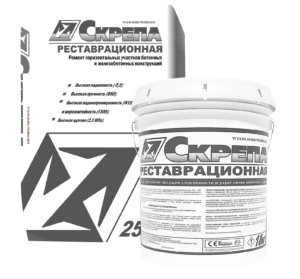

Скрепа Реставрационная – это специализированная ремонтная сухая смесь на цементной основе, предназначенная для восстановления прочности и геометрии бетонных и железобетонных конструкций. Используется при проведении локальных и капитальных ремонтных работ, особенно в зонах с высокой нагрузкой и агрессивной средой.
Основные характеристики:
✅ Состав: цемент, кварцевый песок, минеральные наполнители, полимерные и модифицирующие добавки
✅ Форма выпуска: сухая смесь
✅ Расход: ~18–20 кг/м² при толщине слоя 10 мм
✅ Толщина нанесения за один проход: от 5 до 40 мм
Параметр
Значение
Жизнеспособность раствора
до 60 минут
Время начала схватывания
1–2 часа
Прочность на изгиб
≥ 7 МПа
Адгезия к бетону
≥ 1,5 МПа
Морозостойкость
≥ F300 (более 300 циклов замораживания/оттаивания)
Температура применения
от +5°C до +35°C
Водонепроницаемость
W10–W12
Цвет после высыхания
серый
Особенности и преимущества:
✔️ Высокая прочность и долговечность
✔️ Хорошая адгезия к старому бетону
✔️ Можно наносить как вручную, так и механизировано
✔️ Подходит для наружных и внутренних работ
✔️ Совместима с гидроизоляционными системами (Пенетрон и др.)
✔️ Устойчивость к воздействию влаги, химии и циклам замораживания/оттаивания
Области применения:
🔹 Ремонт бетонных и железобетонных конструкций (балки, колонны, перекрытия)
🔹 Восстановление защитного слоя арматуры
🔹 Восстановление геометрии повреждённых элементов
🔹 Работы в агрессивных условиях эксплуатации (очистные сооружения, подвалы, гидросооружения)
Назад